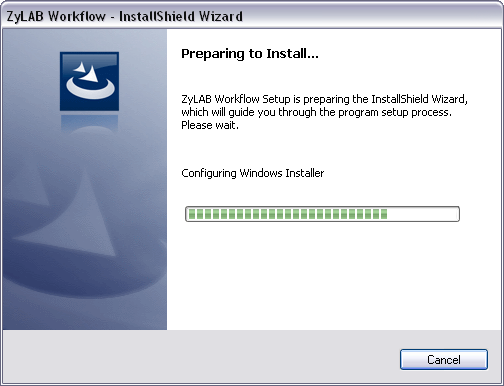
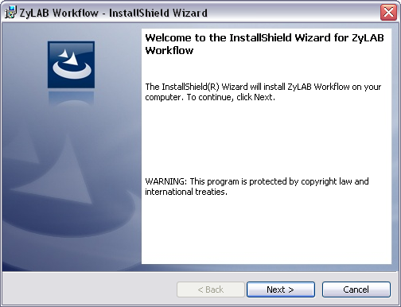
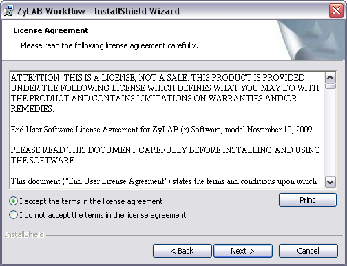
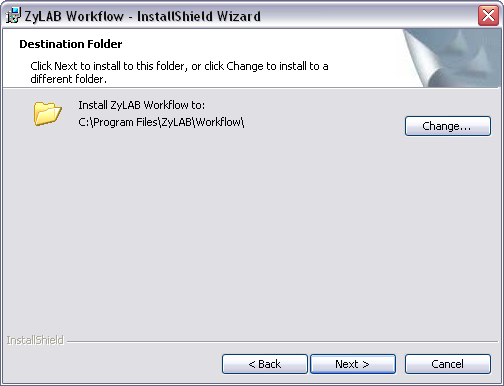
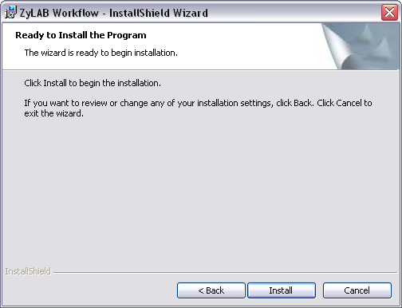
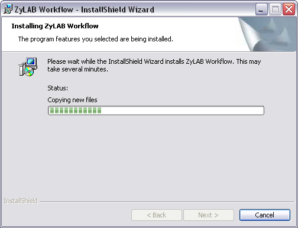
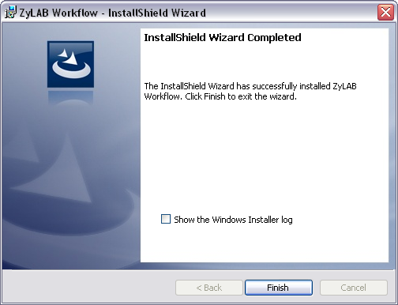

Installation ZyLAB Workflow
Conditions
First, you have installed ZyLAB Information Management Platform. Continue with installing ZyLAB Workflow.
Instructions
- Start the ZyLAB Workflow Installer file. The Preparing to Install screen appears.

- The Welcome screen appears. Click Next.

- Accept the terms in the license agreement. Click Next.

- If necessary change the destination folder. Click Next.

- Click Install to start installation.

- Monitor the installation process.

- Click Finish when the installation process is complete.

Result
You have installed ZyLAB Workflow. Continue with the configuration of ZyLAB Workflow.